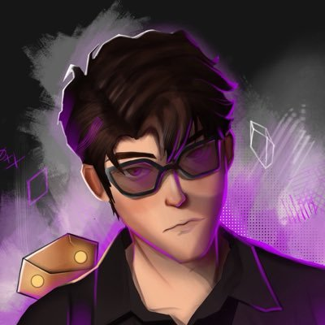
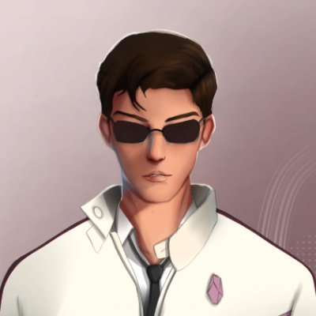
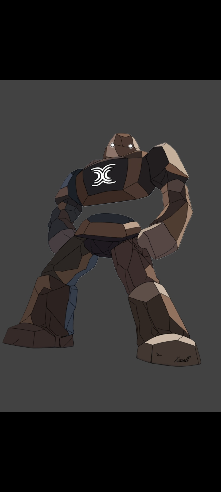

بیدار شدن نگهبان
زمین میلرزه، گولم از دل سنگها بلند میشه و لوگوی روی سینهاش روشن میشه. بنفش و سفید از دو طرف وارد میشن و اسم پروژه ظاهر میشه. برای شروع ویدیوها و پستها مناسبه.
پیشنمایش اولیهی سه کاراکتر پروژه، به شکل وکتور (SVG) و متحرک. اول ببین شبیهشون شدن یا نه، بعد سراغ انیمیشن اصلی میریم. دکمهی «پخش صحنه» یه صحنهی آزمایشی کوتاه با حالوهوای کریپتو نشون میده.



نقش پیشنهادی: بنفش تریدر شببیدار و پرهیجانه، سفید سرمایهگذار خونسرد و بلندمدته، و گولم نماد خود پروژهست: محکم، امن و نگهبان داراییها.
زمین میلرزه، گولم از دل سنگها بلند میشه و لوگوی روی سینهاش روشن میشه. بنفش و سفید از دو طرف وارد میشن و اسم پروژه ظاهر میشه. برای شروع ویدیوها و پستها مناسبه.
یه کندل قرمز بزرگ از آسمون پایین میاد. بنفش وحشت میکنه، سفید آروم چایش رو میخوره. گولم کندل رو با یه دست میگیره و برش میگردونه بالا تا سبز بشه.
سایههای هکر به کیف پول بنفش حمله میکنن. گولم جلوشون میایسته، لوگوش سپر میسازه و حملهها بهش میخورن و خرد میشن. برای معرفی ویژگیهای امنیتی پروژه.
بنفش سؤال میپرسه، سفید توضیح میده و گولم با سنگهاش نمایش میده. مثلاً برای استیکینگ، گولم سنگها رو روی هم میچینه و از بینشون کریستال درمیاد.
برای ایردراپ، لانچ یا لیست شدن توکن: آسمون بنفش میشه و کریستالها میبارن. سه کاراکتر جمعشون میکنن و آخرش تاریخ و جزئیات رویداد نشون داده میشه.
چند لوپ کوتاه برای تلگرام و توییتر: گولم با دست به کمر سر تکون میده، سفید عینکش رو پایین میاره، بنفش اخم میکنه و هالهاش برق میزنه.